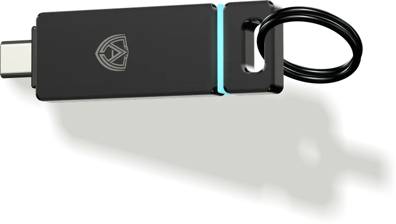
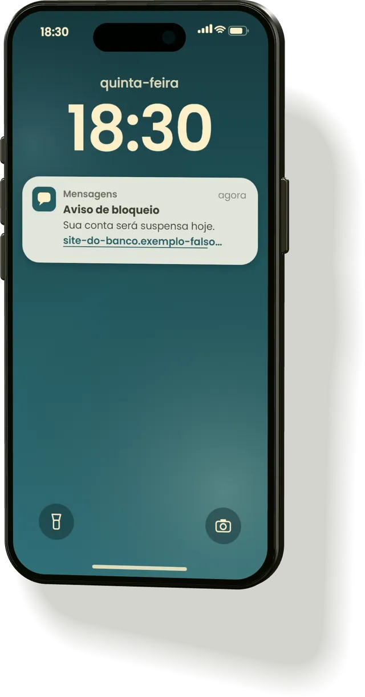
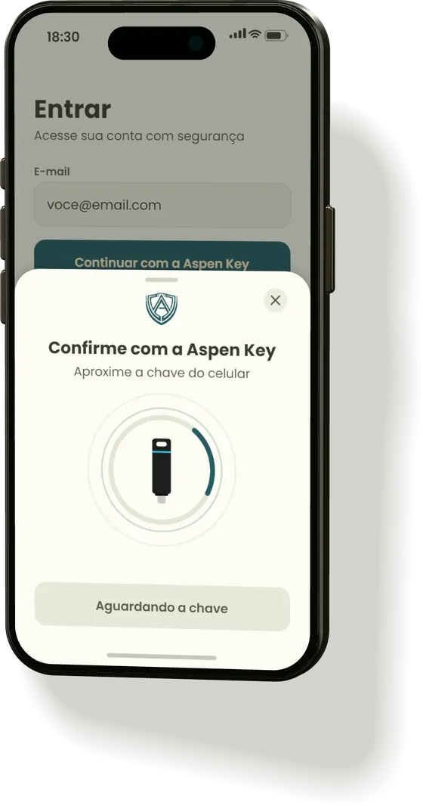
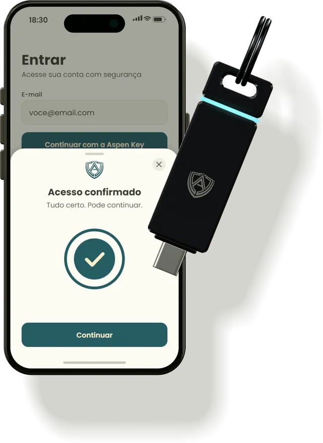
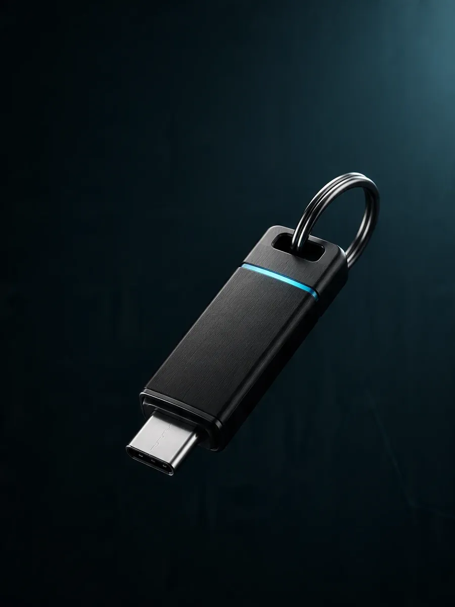
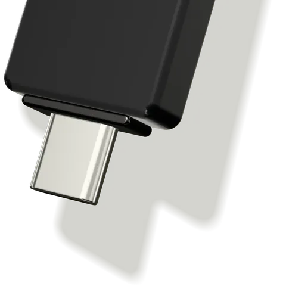
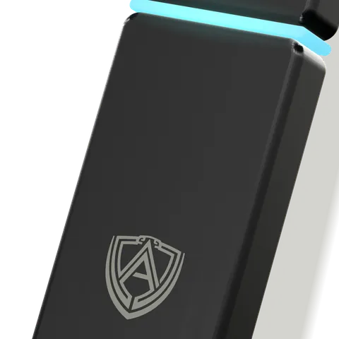
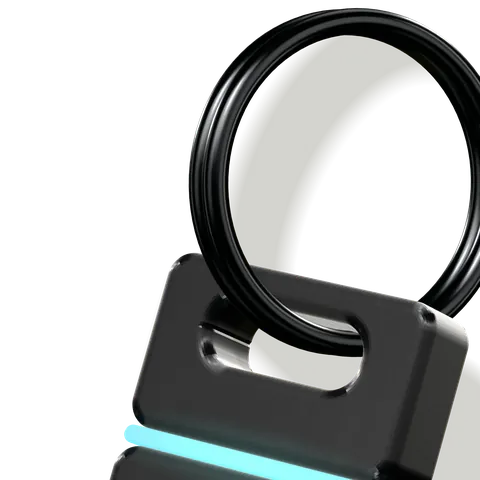

A chave física que vai confirmar que é você
Essa é a Aspen Key. A ideia é que, ao entrar numa conta, além da senha, você encoste a chave no celular.
Protótipo em desenvolvimento. O design final pode mudar.
Hoje ele ainda não se conecta a nenhum site, app ou conta.

Quem descobre a sua senha pode entrar como se fosse você
Uma mensagem com link falso, uma página que imita a do banco, e a senha que você digita ali vai parar na mão de outra pessoa.

A Aspen Key está sendo criada para somar mais uma prova de que é você, além da senha. Uma coisa física, que fica no seu chaveiro.
A ideia em três passos
Esta é a visão do produto. Ainda não é assim que o protótipo funciona hoje.
-
Aproxime
Na hora de entrar numa conta, depois da senha, você encosta a Aspen Key no celular.
-
Confie
A chave confirma que quem está entrando é você, e não alguém que só sabe a sua senha.
-
Acesse
Com a senha e a chave, você entra na sua conta.


O protótipo hoje
Ele já existe como peça física e funciona em parte. Aqui está o que ele faz agora e o que ainda falta.

PENDENTE: trocar pela foto real do protótipo (pendência P01).
PENDENTE: foto do protótipo na mão, para mostrar o tamanho (pendência P02).
PENDENTE: foto do protótipo com o conector USB-C à mostra (pendência P03).
Ficha do protótipo
- Formato
- Bastão de metal preto escovado
- Largura
- Cerca de 20 mm
- Espessura
- Cerca de 6,6 mm
- Conector
- USB-C
- Luz
- Faixa fina de LED ciano
- Topo
- Anel para chaveiro
- Marca
- Escudo da Aspen gravado de forma discreta
- Chip
- Chip de segurança criptográfico



Imagens 3D feitas a partir do protótipo.
Hoje ele faz
- Calcula hash.
- Executa criptografia assimétrica com um chip de segurança criptográfico.
- Existe como peça física, com conector USB-C, faixa de LED e anel.
Ainda não faz
- Não se conecta a nenhum site, app ou conta.
- Não confirma o seu acesso quando encosta no celular. Isso ainda é a visão do produto.
- Ainda não está à venda.
O que é hash e criptografia assimétrica?
O protótipo funcionando
PENDENTE: vídeo curto do protótipo calculando hash e fazendo criptografia assimétrica (pendência P04).
O que aparece no vídeo
PENDENTE: descrever em 2 a 4 frases, na ordem, o que aparece no vídeo (pendência P05).
Protótipo em desenvolvimento. O design final pode mudar.
Entre na lista de espera
Deixe seu e-mail e a gente avisa quando a Aspen Key for lançada. O seu e-mail serve só para esse aviso.
Quer falar com a gente sobre investimento, imprensa ou outro assunto? Escreva para contato@seudominio.com.br.
PENDENTE: endereço do formulário do Tally
Henrique, crie o formulário no Tally e troque PENDENTE_TALLY_ID pelo código dele em index.html. Enquanto isso, o botão abaixo fica desativado.
Carregando o formulário...
O formulário não carregou. Você pode abrir a lista de espera em outra aba. Abrir a lista de espera em outra aba (abre em outra aba)
Perguntas frequentes
Já funciona?
Em parte. O protótipo já calcula hash e executa criptografia assimétrica com um chip de segurança criptográfico. Ele ainda não se conecta a nenhum site, app ou conta.
Substitui a minha senha?
Não. A ideia é que a chave venha junto com a senha, como uma confirmação a mais de que é você.
Quando lança?
Ainda não há data. Se você entrar na lista de espera, a gente avisa por e-mail quando houver.
Quanto custa?
Ainda não há preço.
O que é hash e criptografia assimétrica?
Hash é um cálculo que transforma qualquer dado num código curto, como uma impressão digital desse dado. Criptografia assimétrica usa um par de chaves, uma secreta e outra que pode ser mostrada, e permite provar quem é sem revelar a parte secreta. O protótipo já faz esses dois tipos de cálculo com um chip de segurança criptográfico.
Por que o design pode mudar?
Porque é um protótipo. Formato, acabamento e detalhes ainda podem mudar até a versão final.
O que vocês fazem com o meu e-mail?
Usamos só para avisar quando a Aspen Key for lançada. Você pode pedir para sair da lista quando quiser, pelo contato@seudominio.com.br. Os detalhes estão na Política de privacidade.
Quem está por trás da Aspen Core?
A Aspen Core é uma empresa brasileira em fase de protótipo, que está desenvolvendo a Aspen Key. No Instagram @aspencore_, a gente publica conteúdo sobre como se defender de golpes digitais.